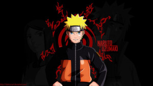
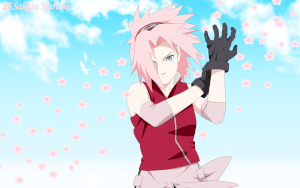

Conheça alguns dos personagens do anime Naruto
Naratuto Uzumaki

Naruto é um órfão que, quando era um recém-nascido, teve um monstro conhecido como a Raposa de Nove Caudas selada dentro de seu corpo pelo seu pai, o Quarto Hokage, Minato Namikaze, o líder da força ninja do País do Fogo, ao custo de sua própria vida.Por causa dele ser o hospedeiro do Nove Caudas, Naruto foi isolado pela maioria dos moradores de sua vila durante sua infância por estar associado com ele e por isso foi considerado tabu.Desde então, Naruto tem cometido piadas e brincadeiras para atrair atenção. Desejando o que lhe faltava no início da vida, Naruto sonha em se tornar um Hokage com a esperança de ser reconhecido e respeitado pelos moradores da vila.Na tentativa de se tornar um ninja, Naruto é horrorizado ao saber de sua natureza Jinchuriki, mas encontra reconhecimento de seu professor Iruka Umino, a quem ele vê como um pai. Depois de aprender o poderoso Multi-Jutsu Clone das Sombras, uma capacidade de cria cópias físicas do utilizador, Naruto se torna um ninja. Ele se junta a um grupo de ninjas sob a liderança de Kakashi Hatake, onde Naruto ganha amigos que ele nunca teve durante a sua infância em seus colegas que também são atribuídos ao Time 7: Sasuke Uchiha, com quem tem uma rivalidade desde que eles se conheceram na academia ninja, e Sakura Haruno.
Sasuke Uchiha

Sasuke é um membro do Clã Uchiha da Vila Oculta da Folha. Sua família inteira foi assassinada por seu irmão mais velho, Itachi Uchiha, que poupou sua vida, julgando-o como indigno de ser morto. Quando é introduzido na série pela primeira vez ao ser designado ao Time 7 para cumprir diversas missões, demonstra grande indiferença para com seus companheiros. Vendo que suas habilidades extraordinárias são superiores aos de seus colegas, algo que fez com que todos o chamassem de "gênio", ele a princípio se torna relutante em cooperar com Sakura Haruno e Naruto Uzumaki, mas com o tempo passa a achá-los úteis. Durante seus treinos, Sasuke começa a controlar o Sharingan, uma habilidade hereditária de seu clã que se manifesta através dos olhos e permite ao usuário prever os movimentos do adversários e imitar seus jutsus. Embora se contente com uma vida feliz na Vila da Folha, ele nunca permite que sua ambição por mais poder saia de seus pensamentos. Durante as batalhas da primeira parte da série, arrogantemente, testa suas habilidades contra ninjas progressivamente mais fortes, com a intenção de descobrir os pontos fracos delas e saná-los.
Sakura Haruno

No início da série, Sakura sente uma profunda atração por Sasuke Uchiha, como muitas outras garotas.[10] Por causa disso, a maior parte das primeiras aparições de Sakura a mostram tentando ganhar a atenção de Sasuke. Conforme a história progride, os dois passam a conviver mais frequentemente como parceiros de time, e ela começa a vê-lo como companheiro e se preocupar com a possibilidade de Sasuke abandoná-los em sua busca por poder. Quando seu medo se torna realidade, Sakura tenta impedir que Sasuke parta, declarando seu amor por ele e oferecendo sua companhia. Porém, Sasuke abandona a Vila Oculta da Folha mesmo assim.
Kakashi Hatake

Kakashi é escolhido como capitão da equipe 7, composta por Naruto Uzumaki, Sasuke Uchiha e Sakura Haruno. Após ter apresentado, Kakashi apresenta uma prova de sobrevivência para o grupo, que acabam passando. Assim o grupo começa das missões simples de Rank D como cada equipe genin, mas por causa das queixas de Naruto, o grupo recebe a primeira missão de Rank C, que consiste em proteger Tazuna, um construtor de pontes. A missão, no entanto, se revela de Rank B, pois Tazuna é perseguido por alguns ninjas traidores da aldeia da névoa que querem matá-lo para o seu chefe, Gatou. Kakashi, apesar desta revelação, decide continuar a missão e uma vez que chegou no país das ondas, o grupo se encontra com o shinobi Zabuza Momochi, o famoso Demônio da Vila Oculta da Névoa, com que Kakashi começa um duro combate. No final, Kakashi consegue derrotar o Zabuza, mas este último é salvo pela intervenção de Haku, vestido de ninja rastreador. Após uma semana o grupo encontra Zabuza novamente (junto com Haku), mas dessa vez eles são mortos (junto com o Gatou).